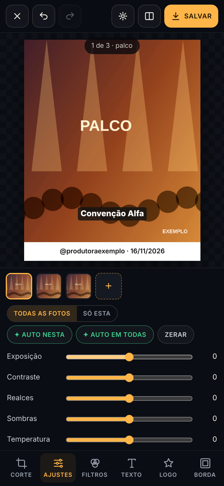

09 · Marketing
Editor de fotos
Feito como os apps de foto mais usados: a foto fica sempre na tela e as ferramentas ficam embaixo (no celular) ou ao lado (no computador) — não precisa rolar para ver o resultado. Tudo roda no seu aparelho: as fotos não sobem para lugar nenhum.

No celular: foto em cima, controles e abas embaixo.
Barra de cima
- ✕Fecha o editor (as fotos continuam abertas).
- ↶Desfazer / refazer qualquer mudança.
- ✦AUTO: acerta luz, contraste, cor e saturação da foto sozinho. Na aba AJUSTES tem AUTO EM TODAS.
- ◫ANTES: divide a foto em antes × depois; arraste a barra.
As abas
- 1CORTE: formato (Feed 4:5, Story 9:16, Capa do YouTube…), foto inteira com fundo desfocado, girar, espelhar, endireitar. Arraste a foto para escolher o corte; pinça = zoom.
- 2AJUSTES e FILTROS: valem para TODAS AS FOTOS ou SÓ ESTA.
- 3TEXTO: 7 fontes, sombra, caixa ou contorno. Arraste o texto na foto. {evento}, {data}, {n} e {@} viram o nome do evento, a data, o número da foto e o seu @.
- 4LOGO: cor automática (branca no escuro, preta no claro), arraste para posicionar e TIRAR FUNDO de logo com fundo branco.